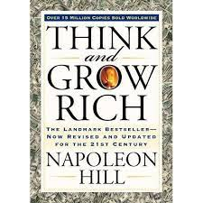

HOME

Think and Grow Rich was written by Napoleon Hill in 1937 and promoted as a personal development and self-improvement book. He claimed to be inspired by a suggestion from business magnate and later-philanthropist Andrew Carnegie.
[1]
First published during the Great Depression,
[2] the book has sold more than 15 million copies
[3]
It remains the biggest seller of Napoleon Hill's books. BusinessWeek magazine's Best-Seller List ranked it the sixth best-selling paperback business book 70 years after it was published.
[4] Think and Grow Rich is listed in John C. Maxwell's A Lifetime "Must Read" Books List.
[5]
While the book's title and much of the writing concerns increasing income, the author insists that his philosophy can help people succeed in any line of work, to do and be anything they can imagine.
EMAIL ME on your contibution about this bookclick here